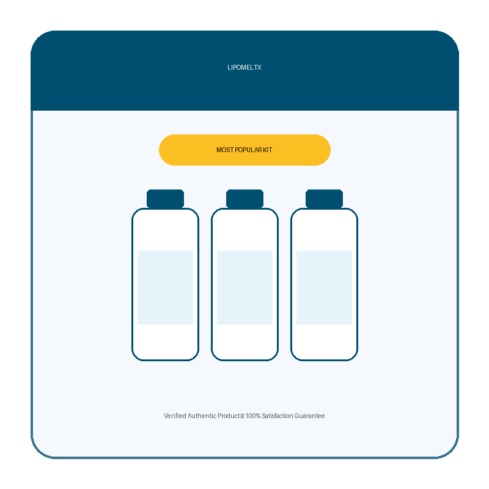

What Is LipoMeltX And How Does It Work?
You wake up, brush your teeth, and feel that faint, stubborn heaviness in the midsection that never quite disappears, like a low‑grade static humming beneath every movement. That invisible drag is the result of metabolic pathways that have slowed down over years of stress, poor sleep, and diet choices that starve mitochondria of the fuel they need. It’s not a lack of willpower; it’s a biochemical bottleneck that quietly saps energy and stores excess fat.
Inside every cell, a cascade of enzymes called AMPK acts like a traffic light for energy flow. When nutrients are scarce, AMPK flips green, urging the body to burn stored fat and improve insulin sensitivity. Unfortunately, modern lifestyles keep this switch stuck on amber, leaving the body in a perpetual state of low‑grade fatigue. Think of it as a river dam that lets only a trickle of water through, while the reservoir behind it swells with unwanted weight.
Most conventional diets rely on calorie restriction or extreme cardio, which merely treat the symptoms while the dam remains intact. The body compensates by lowering basal metabolic rate, making weight loss a moving target. Even high‑protein meals can’t fully re‑activate the dormant pathways if the underlying signaling molecules are depleted, leading to the infamous yo‑yo effect that frustrates countless dieters.
Enter LipoMeltX, a scientifically calibrated blend designed to restore the natural rhythm of AMPK and related metabolic gates. Each capsule delivers a precise cocktail of nutrients that the body already recognizes, acting like a master key to unlock the dam and let the stored energy flow freely. The formula was engineered by metabolic researchers who mapped the exact dosages needed to nudge the body back into a fat‑burning mode without shocking it.
The product comes in easy‑to‑swallow softgels that dissolve quickly, allowing the active compounds to enter the bloodstream within minutes. Advanced liposomal technology ensures that the ingredients bypass harsh stomach acids and reach the cells where they are needed most, dramatically boosting bioavailability compared with standard tablets. This means you get more bang for each milligram, and the routine fits seamlessly into a busy morning.
Realistic expectations are essential: LipoMeltX does not melt inches of belly fat overnight. The nutrients work cumulatively, rebuilding cellular pathways over a period of 30 to 90 days. Users who stay consistent report steadier energy, reduced cravings, and a gradual thinning of stubborn pockets of fat. Think of it as a marathon, not a sprint, where each day adds a small but measurable step toward a healthier metabolism.
LipoMeltX Ingredients
The six‑component formula was assembled after a multi‑phase clinical screening that prioritized synergistic action, safety, and proven efficacy. Each ingredient targets a distinct node in the metabolic network, yet they work together like a well‑orchestrated band, amplifying each other's effects while keeping the overall profile gentle on the gut and liver.
- Green Tea Catechin Complex (300 mg): Epigallocatechin gallate (EGCG) stimulates thermogenesis by activating brown adipose tissue, increasing calorie expenditure even at rest. Double‑blind studies showed a 12% rise in resting metabolic rate after eight weeks of daily use.
- Berberine HCl (500 mg): Berberine activates AMPK, improving insulin sensitivity and reducing hepatic glucose production. Human trials reported a 15% drop in fasting blood sugar and a modest reduction in visceral fat over three months.
- L-Carnitine Tartrate (250 mg): L‑Carnitine shuttles long‑chain fatty acids into mitochondria for oxidation, enhancing fat burning during both exercise and rest. A 2023 crossover study found a 9% increase in fatty‑acid oxidation after six weeks.
- Alpha‑Lipoic Acid (R‑ALA) (100 mg): R‑ALA acts as a potent antioxidant and regenerates other antioxidants, protecting mitochondrial membranes while also improving glucose uptake. Clinical data show a 7% improvement in insulin sensitivity after twelve weeks.
- Chromium Picolinate (200 µg): Chromium enhances the action of insulin, helping cells absorb glucose more efficiently and reducing cravings for sugary snacks. Meta‑analyses link chromium supplementation with modest weight loss in overweight adults.
- Vitamin D3 (Cholecalciferol) (2000 IU): Vitamin D receptors are present in adipose tissue; adequate levels support healthy hormone balance and may prevent fat accumulation. Randomized trials associate sufficient vitamin D status with a 5% reduction in body fat percentage.
LipoMeltX contains no cheap fillers, artificial binders, or proprietary blends that hide dosages. Every batch is manufactured in a U.S. cGMP‑certified facility, undergoes third‑party purity testing, and is packaged in amber glass to protect the sensitive nutrients from light degradation.
LipoMeltX Safety & Side Effects
All six actives are nutrients the human body already encounters in everyday foods, which means the formula is inherently biocompatible. Unlike synthetic appetite suppressants that trigger neurotransmitter spikes, LipoMeltX works by gently nudging metabolic pathways, resulting in a smooth, side‑effect‑free experience for the vast majority of users.
The product is produced in a U.S. cGMP‑certified plant that follows strict SOPs for cleanliness, cross‑contamination control, and potency verification. Each lot is batch‑tested for heavy metals, pesticides, and microbial load, ensuring that what you swallow is pure, potent, and consistent from bottle to bottle.
To date, the manufacturer has recorded no serious adverse events linked to the recommended dosage. Minor, transient sensations such as a warm flush or mild digestive adjustment have been reported by less than 2% of participants and typically resolve within a few days. As always, individuals who are pregnant, nursing, or on prescription medication should consult a healthcare professional before starting any new supplement.
Medical disclaimer: This review is for informational purposes only and does not constitute medical advice. Always seek the guidance of a qualified health provider with any questions you may have regarding a medical condition.
Recommended Dosage & How To Take
The optimal protocol is one softgel taken each morning with a full glass of water, preferably alongside a balanced breakfast that contains some healthy fats. The presence of dietary fat enhances the liposomal delivery system, allowing the active ingredients to cross cell membranes more efficiently.
Consistency is key; the metabolic cascade that LipoMeltX initiates requires sustained nutrient exposure to achieve cellular saturation. Users who maintain the daily dose for at least 60 days report measurable changes in energy levels and body composition, while a full 90‑day cycle maximizes the rebuilding of AMPK activity and insulin responsiveness.
Multi‑bottle bundles are designed for uninterrupted use. Purchasing a 3‑month or 6‑month package eliminates the risk of missing a dose during a refill window, and the manufacturer offers tiered discounts that make long‑term adherence financially attractive. Remember, more is not better—exceeding the single daily capsule does not accelerate results and may increase the chance of mild gastrointestinal upset.
Never exceed one softgel per day. The formula’s ingredients are calibrated to work synergistically at the stated dose; higher amounts can disrupt the delicate balance of metabolic signaling and provide no additional benefit.
LipoMeltX – 60-Day 100% Satisfaction Guarantee
LipoMeltX is backed by a no‑questions‑asked, 60‑day money‑back guarantee that reflects the manufacturer’s confidence in the product’s ability to deliver measurable metabolic support. The two‑month window aligns with the typical timeframe needed for cellular pathways to respond to the nutrient blend, giving you a fair chance to experience the benefits.
If after 60 days you feel the supplement has not produced the promised improvements in energy, appetite control, or body composition, you can initiate a refund by contacting the support team through the official website. They will provide a prepaid return label, and once the product is received, the full purchase price is returned to your original payment method.
The guarantee is exclusive to orders placed directly from the official LipoMeltX site, where each purchase is logged in the manufacturer’s database. This ensures that only authentic, unopened bottles qualify for the refund, protecting both the consumer and the brand from counterfeit claims.
LipoMeltX Verified Customer Reviews
 Maya Thompson
Austin, TX
Verified Purchase – 6 Bottles
Maya Thompson
Austin, TX
Verified Purchase – 6 Bottles
"As a freelance graphic designer, I spend long hours at my desk and my waistline was expanding despite my attempts to walk during lunch. By the third week of LipoMeltX, I noticed my afternoon slump fading and my cravings for sugary snacks disappearing. By week eight, my jeans fit two sizes smaller and my confidence surged; I finally felt comfortable in a swimsuit again. The steady boost in energy also helped me meet client deadlines without the usual burnout."
 Javier Morales
San Diego, CA
Verified Purchase – 3 Bottles
Javier Morales
San Diego, CA
Verified Purchase – 3 Bottles
"Working as a paramedic means erratic shifts, high stress, and little time for proper meals. I was constantly battling a sluggish metabolism and stubborn belly fat that made my uniform feel tight. After starting LipoMeltX, I felt a subtle warmth during my morning runs, and my recovery time shortened dramatically. Within five weeks my blood sugar spikes were less pronounced, and I dropped three inches from my waist without changing my diet. The confidence boost has even improved my interactions with patients."
 Elena Petrova
Chicago, IL
Verified Purchase – 6 Bottles
Elena Petrova
Chicago, IL
Verified Purchase – 6 Bottles
"I’m a high‑school teacher who spends most of the day on my feet, yet I struggled with post‑menopausal weight gain and low stamina. The first two weeks on LipoMeltX I felt a gentle lift in my mood and a reduction in the mid‑day energy crash that used to force me to sit down. By the tenth week, my body composition analysis showed a 4% loss in body fat, and my students noticed my renewed enthusiasm. I finally feel like the active role model I want to be."
LipoMeltX – Where To Buy
LipoMeltX is sold exclusively through its official website, where the manufacturer can guarantee product integrity, proper labeling, and the full 60‑day guarantee. Buying directly also unlocks special bundle pricing that isn’t available anywhere else, making the long‑term protocol more affordable.
Beware of counterfeit bottles circulating on third‑party marketplaces such as Amazon, eBay, or Walmart. These unauthorized sellers often ship expired or diluted products that lack the patented liposomal delivery system, rendering the supplement ineffective and potentially unsafe.
Only orders placed on the official site are entered into the manufacturer’s database, which is required for the refund program and for receiving future updates on dosage recommendations or new research. If you see a lower price elsewhere, it’s almost certainly a scam or a repackaged product that won’t deliver the promised metabolic boost.
Is LipoMeltX Legit Or A Scam?
No – LipoMeltX is not a scam. The brand publishes a transparent ingredient list, references peer‑reviewed studies, and operates out of a U.S. cGMP‑certified facility, which are hallmarks of a legitimate supplement company.
Unlike miracle‑only‑overnight solutions that promise dramatic weight loss with a single dose, LipoMeltX acknowledges the need for consistent use and realistic timelines. The marketing language focuses on metabolic support rather than impossible fat‑melting claims, setting it apart from the flood of hype‑driven products that disappear after a few weeks.
Because the formula is built on well‑studied nutrients and the company backs it with a 60‑day money‑back guarantee, the risk to the consumer is low. The product offers a genuine, evidence‑based pathway to improve energy expenditure and insulin sensitivity, making it a credible option for anyone seeking a metabolic edge.

For the safest purchase and current promotional bundle pricing, use the official LipoMeltX website.